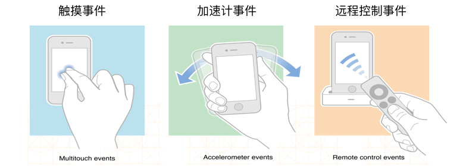
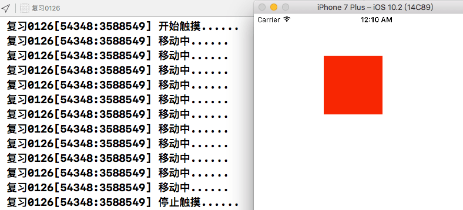
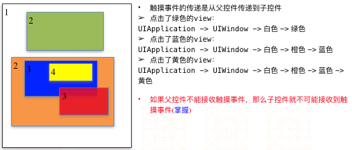
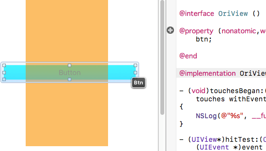
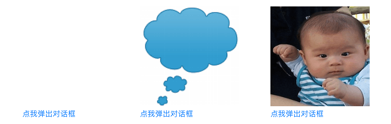
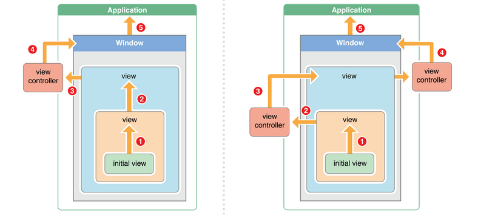

iOS UIResponder响应者对象，iOS中的事件
在使用app的过程中，会产生各种各样的事件，iOS中的事件可以分为3大类型:触摸事件、加速计事件、远程控制事件。不是任何对象都能处理事件，只有继承了UIResponder的对象，才能接收并处理事件。这些对象被称为响应者对象

响应者对象
UIApplication/UIViewController/UIView都继承自UIResponder，他们都能接收并处理事件。先来看看触摸事件，当用户一根手指触摸时，会创建一个与手指关联的UITouch对象，一根手指对应一个UITouch对象。它保持着手指相关信息，如触摸的位置、时间。当手指移动时，系统会更新同一个UITouch对象，使之能够一直保持该手指在的触摸位置。当手指离开屏幕时，系统会销毁相应的UITouch对象。
这里我们在storyboard里拖拽一个UIView，背景设置为红色。修改类为自定义类RedView，在RedView.m文件里，监听该view的移动，用transform设置该view根据手指的移动而移动

#import "RedView.h"
@implementation RedView
- (void)touchesBegan:(NSSet<UITouch *> *)touches withEvent:(UIEvent *)event
{
NSLog(@"开始触摸......");
}
- (void)touchesEnded:(NSSet<UITouch *> *)touches withEvent:(UIEvent *)event
{
NSLog(@"停止触摸......");
}
- (void)touchesMoved:(NSSet<UITouch *> *)touches withEvent:(UIEvent *)event
{
NSLog(@"移动中......");
// 实现该视图随着鼠标的移动而移动
UITouch* touch = [touches anyObject]; // 获取touches中的任意一对象
CGPoint curP = [touch locationInView:self]; // 当前位置
CGPoint preP = [touch previousLocationInView:self]; // 之前位置
CGFloat offsetX = curP.x - preP.x; // x偏移
CGFloat offsetY = curP.y - preP.y; // y偏移
self.transform = CGAffineTransformTranslate(self.transform, offsetX, offsetY);
}
- (void)touchesCancelled:(NSSet<UITouch *> *)touches withEvent:(UIEvent *)event
{
NSLog(@"%s", __func__);
}
@end事件的产生和传递
发生触摸事件后，系统会将该事件加入到一个由UIApplication管理的事件队列中，UIApplication会从事件队列中找出最前面的事件，将事件分发下去处理，通常先发送给主窗口(keyWindow)主窗口会一层层传递，找到最合适的视图来处理触摸事件

UIView不接收触摸事件的3种情况
- 不接收用户交互，userInteractionEnabled = NO;
- 隐藏 hidden = YES;
- 透明 alpha = 0.0 ~ 0.01
UIImageView的userInteractionEnabled默认就是NO，因此UIImageView及其子控件默认不接收触摸事件根据事件的传递规, 父控件如果不接收触摸事件，其子控件的触摸事件也会失效
hitTest方法: 寻找最合适的view
hitTest的底层实现：判断下自己能否接收事件，判断点在不在当前控件上，遍历自己的子控件，如果没有比自己合适的子控件，最合适的view就是自己。
- (UIView *)hitTest:(CGPoint)point withEvent:(UIEvent*)event只要一个事件传递给一个控件，就会调用这个控件的hitTest，返回谁，谁就是最合适的view。在这个方法里return self，就是指定自己处理该事件。
判断下点(point)是不是在当前控件上，重写如果返回NO，则该视图不接收处理事件。
- (BOOL)pointInside:(CGPoint)point withEvent:(UIEvent*)event {
return NO;
}练习1: 橘色的view在覆盖了button，当点击重合的button区域时，穿透橘色view，让button响应。这里第一层级为UIWidow --> button按钮 --> OriView(橙色视图)，当点击橙色视图和button重合的地方时，默认最佳的响应者为橙色视图，这里我们判断如果点击的位置刚好在和按钮重合的位置上时，就放弃响应，给button去响应。在OriView.m文件中建立btn IBOutlet属性，对应button。

#import "OriView.h"
@interface OriView ()
@property (nonatomic,weak) IBOutlet UIButton* btn;
@end
@implementation OriView
- (UIView*)hitTest:(CGPoint)point withEvent:(UIEvent *)event
{
// 判断点在不在按钮上
// 转换坐标系
// point的点事相对于橙色视图的，而我们要判断点是否在btn上，要将坐标转换为btn上的坐标
CGPoint btnP = [self convertPoint:point toView:self.btn];
NSLog(@"转换后: %lf, %lf", btnP.x, btnP.y); // 打印后就明显的看出差距了
NSLog(@"转换前: %lf,%lf", point.x, point.y);
// 获取按钮
if ([self.btn pointInside:btnP withEvent:event]) {
// 点在按钮上，事件传递 按钮 --> 挡住按钮的橙色视图，返回nil，就给上一级处理
return nil;
} else {
return [super hitTest:point withEvent:event];
}
}
@end练习2: 子控件超出父控件范围后的点击事件，点击弹出对话框: 为button添加一个子控件，点击控件图片改变，子控件超出父控件范围，点击该弹窗时，不能触发button的点击事件。

// 点击按钮后执行弹窗
- (IBAction)alertChatView:(popButton*)sender {
UIImage* img1 = [UIImage imageNamed:@"对话框"];
UIImage* img2 = [UIImage imageNamed:@"小孩"];
UIButton* button = [UIButton buttonWithType:UIButtonTypeCustom];
[button setBackgroundImage:img1 forState:UIControlStateNormal];
[button setBackgroundImage:img2 forState:UIControlStateHighlighted];
[button sizeToFit];
sender.button = button; // popButton类.h文件中的属性，用来判断点是否在对话框视图上
// 让子视图超出父控件范围
NSLog(@"%@", button); // frame(0,0,200,202)
CGSize oriSize = button.bounds.size;
button.center = CGPointMake(oriSize.width*0.5, -oriSize.height*0.5);
NSLog(@"%@", button); // frame(0,-202,200,202);
[sender addSubview:button];
}我们给点我弹窗对话框这个按钮专门制定一个类popButton，用来处理hitTest，代码:
- (UIView *)hitTest:(CGPoint)point withEvent:(UIEvent *)event
{
// 坐标系转换
CGPoint curP = [self convertPoint:point toView:self.button];
// 判断点击是否在对话框视图上，在就让他响应
if ([self.button pointInside:curP withEvent:event]) {
return self.button;
} else {
return [super hitTest:point withEvent:event];
}
}事件响应方法
将事件event根据响应者链条向上传递，将事件交给上一个响应者处理
